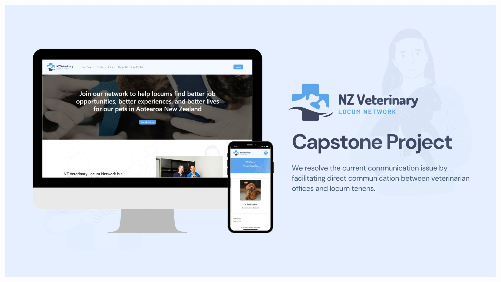
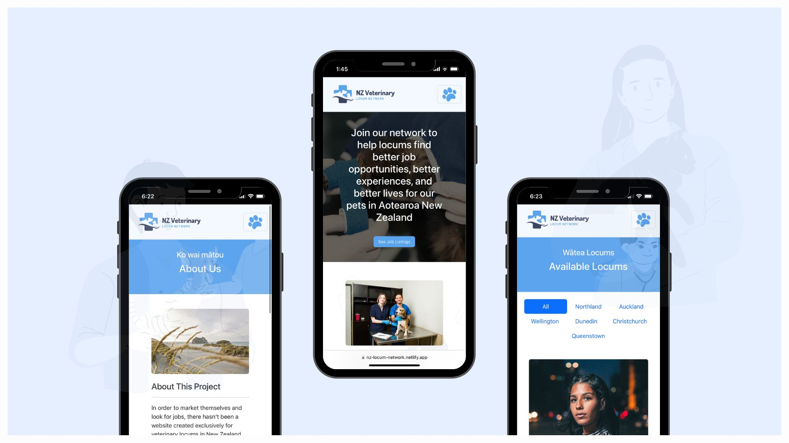

NZ Veterinary Locum Network
In order to market themselves and look for jobs, there hasn't been a website created exclusively for
veterinary locums in New Zealand.
This project intends to develop a platform where veterinary locums can create profiles and introduce
themselves and companies can post job vacancies for locums. We resolve the current communication issue
by facilitating direct communication between veterinarian offices and locum tenens.
Expertise
Full Stack Web Developer
Year
2023


Techonogies:


What made this project relevant?
There is still no infrastructure that enables veterinary locums to openly promote themselves outside of a recruitment agency, making it very difficult for locums and clinics to connect without third-party intervention (recruitment agency). If new veterinary locums don't already have personal relationships with clinics, finding one can be very challenging. They have no platform to view and identify the clinics that require them. Currently, a Facebook group is the only location locums may access information. My aim is to have all doctors' information in a beautiful, understandable style so that they don't have to wade through several Facebook postings to figure out which locum is reliable and reachable for a clinic.
Goals
With this project, I intend to make it easier for veterinary clinics and locums to organize employment on their own without the use of a recruitment firm by centralizing lists of available jobs and veterinary locums. The NZ Veterinary Locum Network will be the only platform to keep track of veterinary locum's profiles that are visible to the public online, filling a specialized need for a distinct sector on the website rather than specialized Facebook groups.
Built with
• Axios • Bcryptjs • Express.js • MongoDB • MongoDB Atlas • Multer • Node.js • Swagger UI • Bootstrap • CSS • Canva • Figma • React • MUI • MDB Bootstrap
Links
Visit https://nz-locum-network.netlify.app/ to access the web application.
User Guide
As a doctor
-
Register an account as a doctor
-
Sign in with your credentials from signing up
-
You will be redirected to your profile when login is successful
-
You can update and delete your profile. You can also browse clinics, jobs, and other doctors
As a clinic
-
Register an account as a clinic
-
Sign in with your credentials from signing up
-
You will be redirected to your profile when login is successful
-
You can update and delete your profile.
-
You can add job listing, update your job listing and delete it
-
You can also browse clinics, jobs, and other doctors
Bug / Feature Request
Known limitations: When you register a user, any uploaded image that's larger than 1 Mb will not go
through,
this is because the TSL certificate from the cloud server is built with an older version of security
policies, your browser won't allow a large file to be sent. The console log will show that it's a CORS
issue.. More information regarding TSL certificate can be found here
https://docs.aws.amazon.com/elasticloadbalancing/latest/network/create-tls-listener.html
If you're running the backend in your local, there should be no problem with CORS and uploading image
larger than 1mb.
Future Software Enhancement List
Allow job listing due date, so when a job listing is expired it will automatically be removed from the website.